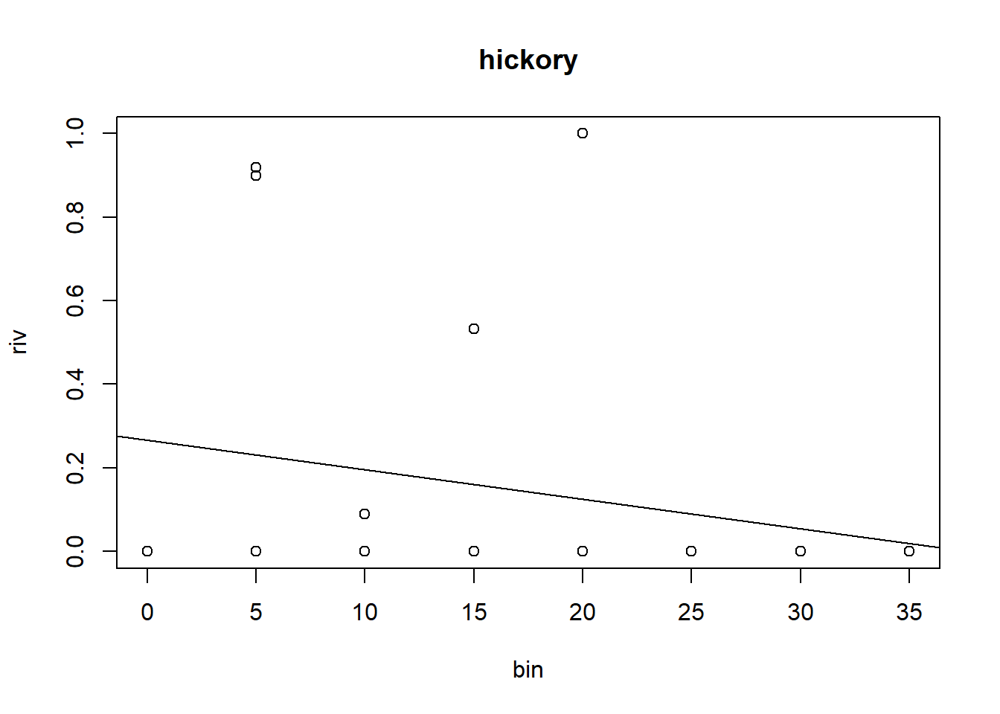
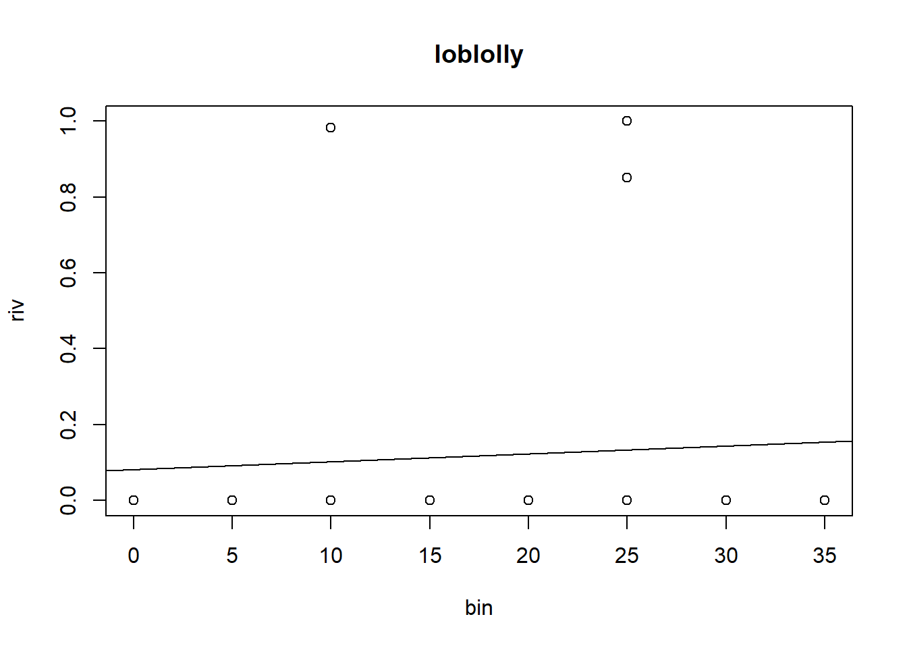

Some approaches analyze lab 3
As we covered in our in-class lab analysis, there is no one correct way to analyze a complex dataset like the one that we have in our lab 3. However, I’ll share my approaches here.
Some Context
Let’s return to the lab’s hypotheses:
(H1): Along a strong, but short, moisture gradient the dominant tree species will vary in distinct regions. (H2.A): Trees alter the soil composition at a hyper-local scale, so that their leaf-litter supports distinct communities of invertebrates. (H2.B): Alternative to H2.A, it could simply be that the abiotic factors are the primary factor determining soil community structure, and the community will vary based on the soil characteristics rather than treespecies.
So for the first hypothesis, we want to evaluate if the dominance of different trees varies along the hillside. To assess “dominance” of trees, we can use the relative importance index and compare how it changes for different trees along the slope.
The second hypothesis is a little more complicated. We are simply interested if there is some difference in community composition between (A) particular trees vs open areas vs others or (B) between soil characteristics (which we assume are associated with the region). Thus, our first hypothesis is someone dependent on the results of the first hypothesis. If the tree community composition varies along the hill side then we’ll only be able to compare . However, if tree dominance doesn’t vary with the slope, we can assess soil community based on the tree-base and the soil community separately.
One general concern I had for this data analysis was that the wasn’t really a true “open” area from which we could collect. The tree canopy covers the entire slopeside so we can’t just compare tree vs. non-tree. However, if trees are different based on regions of the slope, we can still assess if the community composition is different. Another challenge of this lab is we have relatively small samples sizes for the transects. However we do have good data for the inverts.
My approach to analyze the data is very exploratory, I try a bunch of possible approaches to see if we can tease out a signal. However, as you’ll see, analyses are just a tool - while some may be more useful in a given case, generally if there truly isn’t a pattern - your data will show it!
For all this, I’m am using a few more advanced approaches to make it quicker. I’ll show clearly how to run a simple version, but there’s also the advanced options for those of you interested in some of the more powerful applications of R.
In a simple approach, we read in our data by downloading from the github repo’s data folder, put it in our folder of choice, then read it in locally (this is what I’ve taught so far):
inverts <- read.csv('inverts.csv')
tree_raw <- read.csv('tree_raw.csv')What I actually do when writing the tutorials is I will read in the files directly from the internet. You can give read.csv an html address with a csv file. These can be found by clicking “raw” on the github page when looking at the csv of the data. That normally would look like this:
inverts <- read.csv("https://raw.githubusercontent.com/USC-Ecology-Lab/Lab_3_Community-Assemblages/main/data/inverts.csv")However, because we have multiple files, I could click through and manually copy all links, but that’s less fun. So I decided to try and figure out how to get all links automatically using githubs API. Now, this took longer to learn how to do than it would’ve to just copy-and-paste. But I had fun learning this for the past 10mins. Admittedly this is way more than just the ‘advanced version’, but you clicked on this tab so ha.
Thanks chatGPT for the framework!
# This is the code that actually got ran
# I need R's api and json libraries
library(httr)
library(jsonlite)
repo <- 'usc-ecology-lab/Lab_3_Community-Assemblages'
folder_path <- './data'
api_url <- paste0("https://api.github.com/repos/", repo, "/contents/", folder_path)
# read it all in
response <- GET(api_url) |>
content('text') |>
fromJSON()
file_names <- response$name |>
gsub(pattern = '.csv',
replacement = "",
)
# now I can create a list of dataframe
df_list <- list()
# loop through and download
for(i in 1:nrow(response)) {
df_list[[i]] <- read.csv(response$download_url[i])
}
names(df_list) <- file_names #name the list
list2env(df_list, envir = .GlobalEnv) #load the list to the environment<environment: R_GlobalEnv>rm(list = c("df_list", "repo", "api_url",
'file_names','folder_path','i'))Exploratory Data Analysis for Trees
To address the first hypothesis, we need to explore how the importance of trees varies with the slope. However, to do this we need to think about the data we have.
The tree_raw dataframe does not offer much to work with. Unless we wanted to investigate a question like “does loblolly size vary based on slope?”. Instead we need to rely on the RIV (relative importance value). I already calculated this for you in a few approaches. First, I did it by species and by category (grouping some similar species together). I also calculated RIV in 5m bins and then again in 3-large bins which correspond to the defined sub regions people listed on their transects.
RIV is calculated by effectively measuring the total area in a set bin which is occupied by that particular species. Such that for each \(s\) species, and \(i\) tree (belonging to a \(s\) species):
\[ RIV_{s} = \frac{\sum_{i_s} \pi \frac{DBH_{i_s}}{2}^2}{\sum_{i} \pi \frac{DBH_{i}}{2}^2} \]
An attempt at regression & correlation
I really wanted to try a correlation/regression analysis in this lab. However, the data don’t really make it all that clean (or appropriate). Nonetheless, I figured if I make 5-m bins we can try to treat them as a continuous variable and run a regression. Regressions, as you can see below don’t apply in this case. However, we can use a non-parametric correlation to say something about our data.
We can only look at one tree’s RIV change at a time. For the simple example, let’s just do hardwoods because they are the most abundant overall.
library(dplyr)
hardwood_bins <- tree_cat_5m |>
filter(Tree_cat == 'hardwood')
hardwood_lm <- lm(riv ~ bin, data = tree_cat_5m)
summary(hardwood_lm)
Call:
lm(formula = riv ~ bin, data = tree_cat_5m)
Residuals:
Min 1Q Median 3Q Max
-0.25000 -0.18992 -0.13095 -0.08333 0.89286
Coefficients:
Estimate Std. Error t value Pr(>|t|)
(Intercept) 0.250000 0.065199 3.834 0.000228 ***
bin -0.004762 0.003117 -1.528 0.129951
---
Signif. codes: 0 '***' 0.001 '**' 0.01 '*' 0.05 '.' 0.1 ' ' 1
Residual standard error: 0.3499 on 94 degrees of freedom
Multiple R-squared: 0.02423, Adjusted R-squared: 0.01385
F-statistic: 2.334 on 1 and 94 DF, p-value: 0.13From the above output, we can look at the p-value of “bin” to see if there is a signficant effect of bin (slope location) on riv. It is 0.129951, so we would conclude the slope is not significantly different from 0. Or in simpler words there is no effect.
To be quick, I just looked at this data using base R:
plot(riv ~ bin, hardwood_bins)
abline(hardwood_lm)
This isn’t a pretty plot I would present, but it is useful for my purposes. We can see that the regression line is largely influenced by the large amount of 0’s at high bins. A linear regression in this case is not really the best method given the fact the LIINE assumptions are not met. However, we can test if there is a significant correlation using a non-parametric correlation test. Correlation tests aren’t as useful as regressions since they don’t give us an effect size like slope - which is a quantitative relationship with predictive power. Instead, correlations just tell us how tightly two variables are related (from 0-1). Correlations work well with monotonic relationships, and there are several methods for using non-normal, non-linear data. Here, we’ll use spearman’s rank correlation
cor.test(x = hardwood_bins$bin, y = hardwood_bins$riv, method = 'spearman')
Spearman's rank correlation rho
data: hardwood_bins$bin and hardwood_bins$riv
S = 3873.7, p-value = 0.0002268
alternative hypothesis: true rho is not equal to 0
sample estimates:
rho
-0.6842051 Here, we can conclude that there is a significant, negative correlation between increasing distance up the slope (bin) and the relative importance value of hardwoods (spearman’s \(\rho\) = -0.684, p < 0.001).
To do this with other categories, you can just change where we filter for hardwoods and try for other categories!
Really, in fully data exploration mode, I want to run the simple analysis for every single species and every single categories. It gets fairly messy to do this “by-hand” and copy-pasting code over and over and changing little details. Instead what I really would do here is loop through all categories and print out the regression output and make quick, ugly plots. If there’s something interesting, I can clean it up later.
I can now scroll through all this output and read what I want!
# Loop analysis:
tree_sp <- list()
for(tree in unique(tree_sp_riv_5m$tree_id)) {
tree_sp[[tree]] <- tree_sp_riv_5m |>
filter(tree_id == tree)
}
# run the regressions here
tree_5m_reg_mod <- list()
for(tree in names(tree_sp)) {
tree_5m_reg_mod[[tree]] <- lm(riv ~ bin, data = tree_sp[[tree]])
print(tree) # print out name of trees
print(cor.test(x = tree_sp[[tree]]$bin, y = tree_sp[[tree]]$riv,
method = 'spearman'))
}[1] "sycamore"
Spearman's rank correlation rho
data: tree_sp[[tree]]$bin and tree_sp[[tree]]$riv
S = 3358.3, p-value = 0.02367
alternative hypothesis: true rho is not equal to 0
sample estimates:
rho
-0.4601307
[1] "dogwood"
Spearman's rank correlation rho
data: tree_sp[[tree]]$bin and tree_sp[[tree]]$riv
S = 2857.1, p-value = 0.2541
alternative hypothesis: true rho is not equal to 0
sample estimates:
rho
-0.2422138
[1] "hickory"
Spearman's rank correlation rho
data: tree_sp[[tree]]$bin and tree_sp[[tree]]$riv
S = 2946.6, p-value = 0.1833
alternative hypothesis: true rho is not equal to 0
sample estimates:
rho
-0.2811346
[1] "loblolly"
Spearman's rank correlation rho
data: tree_sp[[tree]]$bin and tree_sp[[tree]]$riv
S = 2110.8, p-value = 0.7024
alternative hypothesis: true rho is not equal to 0
sample estimates:
rho
0.08226127
[1] "whiteoak"
Spearman's rank correlation rho
data: tree_sp[[tree]]$bin and tree_sp[[tree]]$riv
S = 1694.7, p-value = 0.214
alternative hypothesis: true rho is not equal to 0
sample estimates:
rho
0.2631807
[1] "poplar"
Spearman's rank correlation rho
data: tree_sp[[tree]]$bin and tree_sp[[tree]]$riv
S = 3032.6, p-value = 0.1293
alternative hypothesis: true rho is not equal to 0
sample estimates:
rho
-0.318511
[1] "bay"
Spearman's rank correlation rho
data: tree_sp[[tree]]$bin and tree_sp[[tree]]$riv
S = 3055.9, p-value = 0.1169
alternative hypothesis: true rho is not equal to 0
sample estimates:
rho
-0.3286648
[1] "wateroak"
Spearman's rank correlation rho
data: tree_sp[[tree]]$bin and tree_sp[[tree]]$riv
S = 2419.1, p-value = 0.8101
alternative hypothesis: true rho is not equal to 0
sample estimates:
rho
-0.05178796 for(tree in names(tree_sp)) {
try({
plot(riv ~ bin, tree_sp[[tree]],
main = tree)
abline(tree_5m_reg_mod[[tree]])
})
}



Looking at it by species, it is not very clear
I can also do this by category:
# Loop analysis:
tree_cat <- list()
for(cat in unique(tree_cat_5m$Tree_cat)) {
tree_cat[[cat]] <- tree_cat_5m |>
filter(Tree_cat == cat)
}
tree_cat_reg_mod <- list()
for(cat in names(tree_cat)) {
tree_cat_reg_mod[[cat]] <- lm(riv ~ bin, data = tree_cat[[cat]])
print(cat)
print(cor.test(x = tree_cat[[cat]]$riv,
y = tree_cat[[cat]]$bin,
method = 'spearman'))
}[1] "hardwood"
Spearman's rank correlation rho
data: tree_cat[[cat]]$riv and tree_cat[[cat]]$bin
S = 3873.7, p-value = 0.0002268
alternative hypothesis: true rho is not equal to 0
sample estimates:
rho
-0.6842051
[1] "pine"
Spearman's rank correlation rho
data: tree_cat[[cat]]$riv and tree_cat[[cat]]$bin
S = 2110.8, p-value = 0.7024
alternative hypothesis: true rho is not equal to 0
sample estimates:
rho
0.08226127
[1] "oak"
Spearman's rank correlation rho
data: tree_cat[[cat]]$riv and tree_cat[[cat]]$bin
S = 1953.5, p-value = 0.4823
alternative hypothesis: true rho is not equal to 0
sample estimates:
rho
0.1506457
[1] "other"
Spearman's rank correlation rho
data: tree_cat[[cat]]$riv and tree_cat[[cat]]$bin
S = 3055.9, p-value = 0.1169
alternative hypothesis: true rho is not equal to 0
sample estimates:
rho
-0.3286648 for(cat in names(tree_cat)) {
try({
plot(riv ~ bin, tree_cat[[cat]],
main = cat)
abline(tree_cat_reg_mod[[cat]])
})
}Looking at all the categories, our only significant correlation is with the hardwoods. However, it is worth noting that the pines only occur in the mid-slope area. This would make the relationship non-monotonic so we can’t capture that relationship with a simple rank-correlation test.
If I wanted to plot these data to look a little better, I’d use ggplot and loess smoothers:
ggplot(hardwood_bins, aes(x = bin, y = riv)) +
geom_point() +
geom_smooth(color = 'black') +
labs(x = 'Distance up slope [m]', y = 'Hardwood RIV') +
theme_classic()The Kruskall-Wallace approach
Since we don’t really have enough data for a regression, the alternative approach is to use an ANOVA with RIV as the response variable and sub region as the predictor. Since we have a RIV value for each tree, we will need to run the ANOVA for each response variable. I’m not even investigating my assumptions for an ANOVA however because I have such small sample size, I’m going to assume that the non-parametric approach is necessary.
I can make one graph to show all this data, but then run multiple tests to investigate the data.
I’ll just do this for groups by category since we already well know that there is not enough data for grouping by species.
library(ggplot2)
tree_cat_summary <- tree_cat_subregion |>
group_by(Subregion, Tree_cat) |>
summarize(mean_riv = mean(riv),
sd_riv = sd(riv))
ggplot(tree_cat_summary) +
geom_bar(aes(x = Tree_cat, y = mean_riv, fill = Subregion),
stat = 'identity', position = 'dodge') +
geom_errorbar(aes(x = Tree_cat, ymin = mean_riv,
ymax = mean_riv + sd_riv,
color = Subregion),
stat = 'identity', position = 'dodge') +
labs(x = 'Tree Category', y = 'RIV', fill = "Subregion",
color = "Subregion") +
theme_classic()Similar to the regression approach, we will need to run a kruskall.wallace test for each individual tree-category. I’m going to use the dunn.test() function from the dunn.test package because it will run both the kruskall wallace test and the post-hoc tests at once. The KW test tells us if there is some difference between the groups then the dunn test tells us pair-wise comparisons.
library(dunn.test)
# we'll use the category & subregion dataframe
# let's look at pines this time
pine_regions <- tree_cat_subregion |>
filter(Tree_cat == 'pine')
dunn.test(g = pine_regions$Subregion, x = pine_regions$riv) Kruskal-Wallis rank sum test
data: x and group
Kruskal-Wallis chi-squared = 2.102, df = 2, p-value = 0.35
Comparison of x by group
(No adjustment)
Col Mean-|
Row Mean | bog dryhill
---------+----------------------
dryhill | -1.416983
| 0.0782
|
slope | -0.974176 0.442807
| 0.1650 0.3290
alpha = 0.05
Reject Ho if p <= alpha/2This tells us that the relative importance value of pines is not significantly different across regions (Kruskall wallace test, p = 0.35)
Again, I just want to run all the tests at once. This time, to keep it clean, I’ll just do it for the categories:
tree_cat_reg <- list()
for(cat in unique(tree_cat_subregion$Tree_cat)) {
tree_cat_reg[[cat]] <- tree_cat_subregion |>
filter(Tree_cat == cat)
}
for(cat in names(tree_cat_reg)) {
print(cat)
dunn.test(g= tree_cat_reg[[cat]]$Subregion,
x = tree_cat_reg[[cat]]$riv)
}[1] "hardwood"
Kruskal-Wallis rank sum test
data: x and group
Kruskal-Wallis chi-squared = 4.3556, df = 2, p-value = 0.11
Comparison of x by group
(No adjustment)
Col Mean-|
Row Mean | bog dryhill
---------+----------------------
dryhill | 2.086996
| 0.0184*
|
slope | 1.043498 -1.043498
| 0.1484 0.1484
alpha = 0.05
Reject Ho if p <= alpha/2
[1] "oak"
Kruskal-Wallis rank sum test
data: x and group
Kruskal-Wallis chi-squared = 2.7152, df = 2, p-value = 0.26
Comparison of x by group
(No adjustment)
Col Mean-|
Row Mean | bog dryhill
---------+----------------------
dryhill | -1.556997
| 0.0597
|
slope | -0.311399 1.245598
| 0.3777 0.1065
alpha = 0.05
Reject Ho if p <= alpha/2
[1] "pine"
Kruskal-Wallis rank sum test
data: x and group
Kruskal-Wallis chi-squared = 2.102, df = 2, p-value = 0.35
Comparison of x by group
(No adjustment)
Col Mean-|
Row Mean | bog dryhill
---------+----------------------
dryhill | -1.416983
| 0.0782
|
slope | -0.974176 0.442807
| 0.1650 0.3290
alpha = 0.05
Reject Ho if p <= alpha/2
[1] "other"
Kruskal-Wallis rank sum test
data: x and group
Kruskal-Wallis chi-squared = 1.1667, df = 2, p-value = 0.56
Comparison of x by group
(No adjustment)
Col Mean-|
Row Mean | bog dryhill
---------+----------------------
dryhill | 1.020620
| 0.1537
|
slope | 0.204124 -0.816496
| 0.4191 0.2071
alpha = 0.05
Reject Ho if p <= alpha/2All in all, the kruskall-wallace tests suggest that there are no significant differences between subregions and RIV for any tree category. However, we did see a significant negative correlation between increasing slope distance and hardwood RIV. If I were discussing these results, I’d probably talk about how there were strong trends for some taxa to be in certain regions but there isn’t a large enough amount of data to distinguish between different regions. I’d also note that the hardwood RIV relationship was influenced by the one large Tulip poplar and the American sycamores which tended to be in the bog, or at the bog edge. There was a consistent amount of oaks, albeit from different species up the hill and pines were notable, but sparse.
Also maybe DBH isn’t the best metric because although pines don’t get too thick, they get very tall and produce many leaves which may have a dispropotionate influence on the leaf litter.
Exploratory Data Analysis for inverts
To assess if the invertebrate community is significantly different between litter invertebrate community and (A) tree-base or (B) slope-region. These data are not too clear to disentangle because based on our tree analysis, we know the tree community is not that different along the slope. However, there are some subtle differences between tree RIV (hardwoods tend to be lower on the slope). So if we see a significant difference, is it from the slope-soil characteristics or the tree litter composition. Theoretically, our open-sampling locations would help disentangle this, however, we didn’t get a truly open sample. Nonetheless, I’ll treat it as such.
First, we need to make a summary dataframe with means and standard deviations.
invert_sum <- inverts |>
group_by(Spp, Sampling_tree, Region) |>
summarize(mean_count = mean(Num),
sd_count = sd(Num))Now, I have three categories to plot, Species, Sampling_tree, and Region. And I want to show the mean count for each species. This is too much to fit on one plot so I’ll make a plot for each species then display it. Given the large number of species in a study like this, it would be OK to focus on the most abundant or a few unique ones.
# let's just look at mites
acari_sum <- invert_sum |>
filter(Spp == 'Acari')
ggplot(acari_sum) +
geom_bar(aes(x = Region, y = mean_count, fill = Sampling_tree),
stat = 'identity', position = 'dodge') +
geom_errorbar(aes(x = Region, ymin = mean_count,
ymax = mean_count + sd_count, color = Sampling_tree),
position = 'dodge') +
labs(x = "Slope Region", y = "Mean Acari Abundance",
fill = "Tree", color = "Tree") +
theme_classic()This analysis is a little bit tricky. We want to compare how abundance of a single species (we’ll use acari) varies between certain trees and slope region. If we had a balanced dataset, we could use a two-way ANOVA to compare both slope region, tree, and the interaction. However, because some tree categories didn’t occur in some regions we can’t do that. Instead, I’ll use an kruskall-wallace test to compare: within a region, does the insect litter community vary between the tree which were sampled. For the example, I’ll just do upper, but you can run this for every region.
upper_acari <- inverts |>
filter(Region == 'Upper', Spp == 'Acari')
dunn.test(g = upper_acari$Sampling_tree, x = upper_acari$Num) Kruskal-Wallis rank sum test
data: x and group
Kruskal-Wallis chi-squared = 3.1767, df = 2, p-value = 0.2
Comparison of x by group
(No adjustment)
Col Mean-|
Row Mean | Loblolly Oak
---------+----------------------
Oak | -0.674849
| 0.2499
|
Open | 1.173673 1.724615
| 0.1203 0.0423
alpha = 0.05
Reject Ho if p <= alpha/2So based in the results of the kruskall-wallace test there’s no significant difference in acari abundance between the Loblolly site, the open site, and the oak site (KW test p-value = 0.2). Discussing these results, I’d note that the pine litter appeared to dominate the whole system and acari were generally well spread throughout all litter communities. I’d also likely run a few more tests in the different regions and with different taxa to see what patterns arise.
A common approach for assessing community composition is a Non-metic Multidimensional Scaling approach. This is an ordination technique usable for count data (with a lot of 0’s). Effectively, what NMDS does is it takes all the many response variables (counts of every taxa) and assess how different each row (site) is based on the counts of the taxa. It does this by ranking them in multidimensional space and measuring the distance. Then, it mushes those distances into a lower dimension where we can look at it. Then we can overlay the site/tree/whatever to visualize if there are any clear patterns that arise. It is important to note that when plotting in NMDS-space the distances between the points do not mean anything (hence non-metric) yet we can make relative assessments on the visual groupings.
We’ll need to use the vegan package so install it if you don’t have it. I’ll also use tidyr for the data prep.
When running the nmds, it iterates to find an optimal solution. Yet we specify the number of dimensions to reduce into. Ideally, we want a low stress value (<0.2). So I’ll play around with the number of dimensions to get it lower. I did this a few times and ended up setting k = 3 for three dimensions.
library(vegan)
library(tidyr)
invert_comm <- inverts |>
pivot_wider(names_from = Spp,
values_from = Num)
set.seed(1000)
invert_nmds=metaMDS(invert_comm[,4:ncol(invert_comm)], # Our community-by-species matrix
k=3) # The number of reduced dimensionsSquare root transformation
Wisconsin double standardization
Run 0 stress 0.1285056
Run 1 stress 0.1340613
Run 2 stress 0.1348327
Run 3 stress 0.1297093
Run 4 stress 0.1297095
Run 5 stress 0.1297095
Run 6 stress 0.1348331
Run 7 stress 0.1285056
... New best solution
... Procrustes: rmse 3.606478e-05 max resid 8.770583e-05
... Similar to previous best
Run 8 stress 0.1480649
Run 9 stress 0.1315938
Run 10 stress 0.1285056
... Procrustes: rmse 0.0003471511 max resid 0.0007761196
... Similar to previous best
Run 11 stress 0.1649935
Run 12 stress 0.1305927
Run 13 stress 0.1285056
... New best solution
... Procrustes: rmse 2.07782e-05 max resid 4.203106e-05
... Similar to previous best
Run 14 stress 0.1285059
... Procrustes: rmse 0.0005192305 max resid 0.001164083
... Similar to previous best
Run 15 stress 0.1285059
... Procrustes: rmse 0.0005116436 max resid 0.001147285
... Similar to previous best
Run 16 stress 0.1315938
Run 17 stress 0.1480648
Run 18 stress 0.1315938
Run 19 stress 0.1285056
... Procrustes: rmse 0.0002657652 max resid 0.0005953675
... Similar to previous best
Run 20 stress 0.1480647
*** Best solution repeated 4 timesTo plot my nmds, I’ll need to make three plots because I have three dimensions. I can look at 1v2, 1v3, and 2v3. Effectively, I’m plotting the different faces of the cube that these points exist in.
plot_nmds <- cbind(invert_comm[,1:3], invert_nmds$points)
p1 = ggplot() +
geom_point(data = plot_nmds,
aes(x = MDS1, y = MDS2, color = Sampling_tree,
shape = Region),
size = 5)+
geom_label(data = as.data.frame(invert_nmds$species),
aes(x = MDS1, y = MDS2, label = rownames(as.data.frame(invert_nmds$species))))+
theme_minimal()
p2 = ggplot() +
geom_point(data = plot_nmds,
aes(x = MDS2, y = MDS3, color = Sampling_tree,
shape = Region),
size = 5)+
geom_label(data = as.data.frame(invert_nmds$species),
aes(x = MDS2, y = MDS3, label = rownames(as.data.frame(invert_nmds$species))))+
theme_minimal()
p3 = ggplot() +
geom_point(data = plot_nmds,
aes(x = MDS1, y = MDS3, color = Sampling_tree,
shape = Region),
size = 5)+
geom_label(data = as.data.frame(invert_nmds$species),
aes(x = MDS1, y = MDS3, label = rownames(as.data.frame(invert_nmds$species))))+
theme_minimal()p1
p2
p3Looking at these figures there are not really any clear clusters which pop out. This is another way to see there isn’t a strong difference in community composition across the slope/tree sides